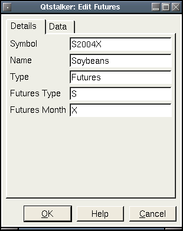

This plugin is used for managing futures data. User can edit bar
data
fields. There are 2 tabs in the stock dialog. The details tab allows
the user to edit some fundamental data. The data tab allows the user to
edit bar data.

Here is where you can edit the bar data. Just select a date and time and press the 'search' button and the data will display in the list. To edit a field, just select a field and change the values directly. To save your changes press the save button. To delete a record press the delete button.